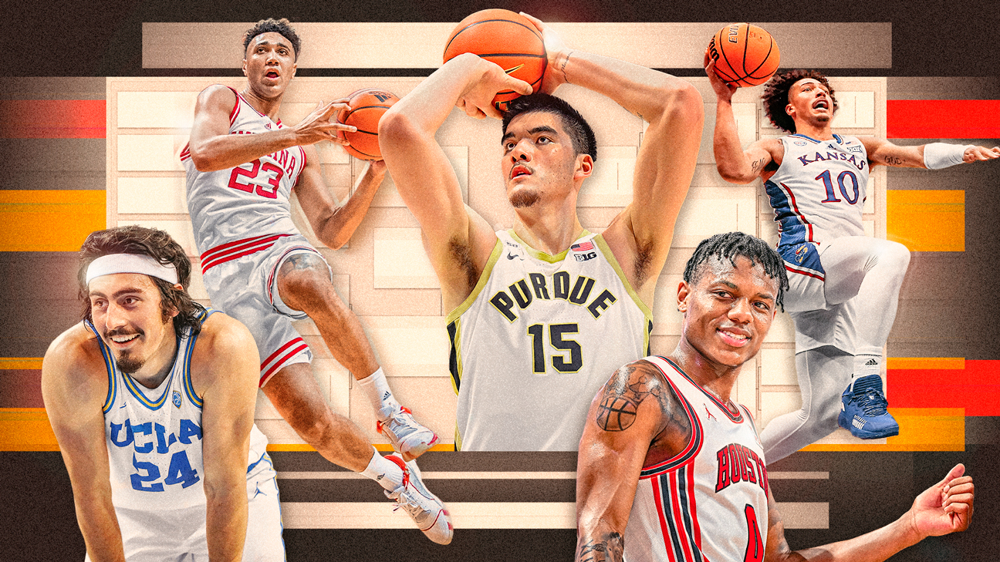
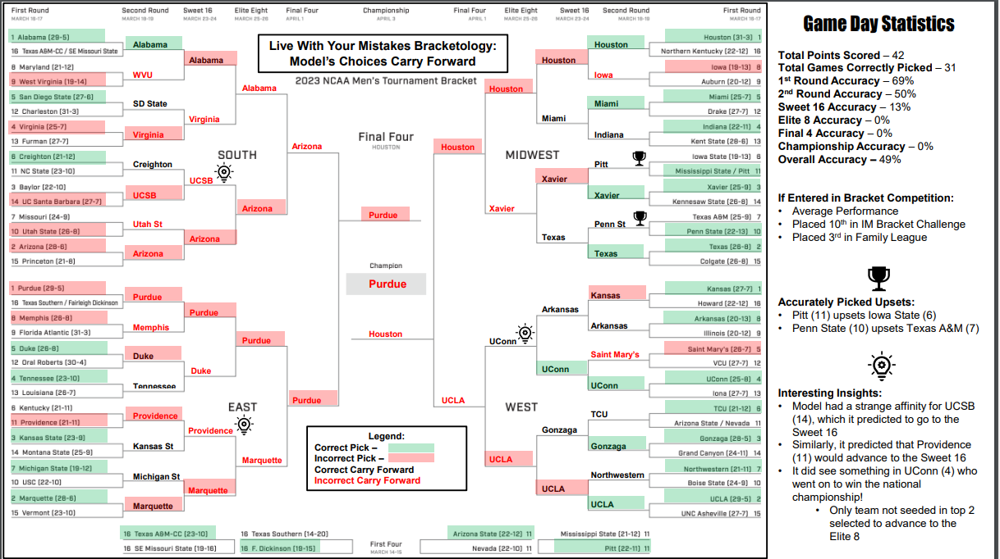
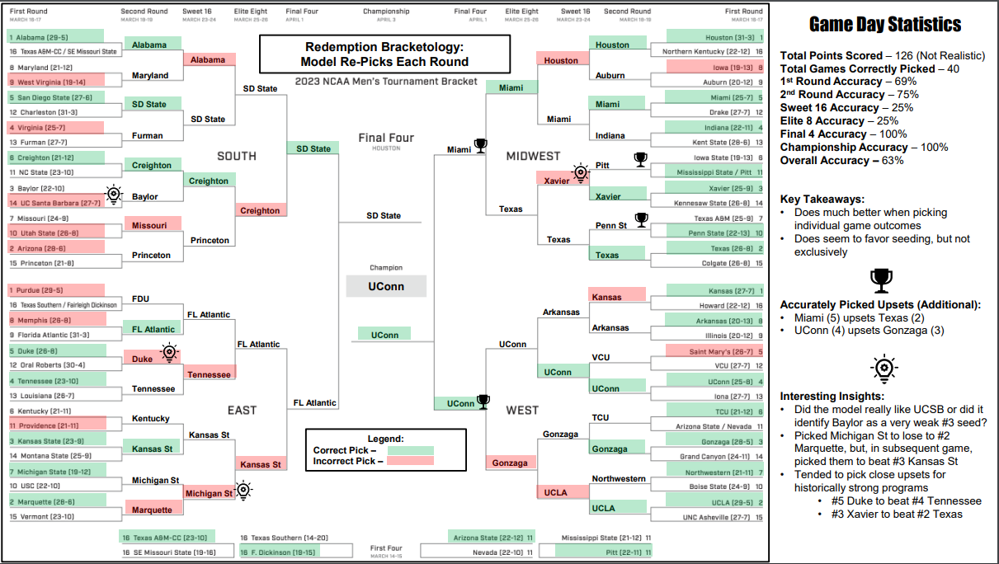

Modeling The Madness
 Project Description
March Madness is a 68-team single-elimination tournament of men’s Division I National Collegiate Athletic Association (NCAA) basketball teams. While popular to watch, predicting the tournament outcome has also become popular as many people submit their bracket predictions. The wide array of data and information about teams and games provides fertile ground for people to analyze and predict outcomes. Despite this richness of data, predicting the winner of March Madness is extremely challenging. In fact, the odds of predicting a perfect bracket are 1 in 9,223,372,036,854,775,808. Using this rich set of data, we use machine learning models to predict outcomes of the 2023 March Madness and gain insights about team performance. The project implements 12 different machine learning models from Gaussian Naive Bayes to Agglomerative Clustering to answer three questions (see below) about the March Madness tournament. The models found common characteristics that make teams successful as well as reached decent levels of accuracy when predicting what teams will be in the tournament and which teams will win when matched up. Overall, this project provides interesting insights on how to predict March Madness outcomes.
Questions:
1.) Which teams will make it into the NCAA Men's Basketball Tournament in 2023? Which teams will win each round of the tournament bracket? (Classification with a Target Variable of binary 'Win' column)
2.) Have tournament outcomes become harder to predict in the Name Image & Likeness (NIL) Era where NCAA athletes can be paid by universities? We compare probability gaps in game outcomes from previous tournaments to see if prediction windows are becoming tighter and, consequently, game outcomes more uncertain. (Prediction with a Target Variable of win probability for a given team - TeamA)
3.) What common characteristics What common characteristics in terms of their performance emerge when teams are grouped together? For example, do all the most successful teams have a certain shooting percentage or number of steals per game? (Unsupervised Learning)
Data Collection:
Competition Description and Data Source: Jeff Sonas, Maggie, Will Cukierski. (2023). March Machine Learning Mania 2023, Kaggle, https://kaggle.com/competitions/march-machine-learning-mania-2023
Raw Data: https://drive.google.com/drive/folders/1QQdON5MN4fGMu_liM8uyWiOxpTmLDrPs?usp=share_link
Other Data Files: There are multiple datasets that are created and read out at the end, which can be seen in the data folder.
Results And Findings
Classification Task Results:
We employed four distinct classification models: Logistic Regression, Gaussian Naive Bayes, Random Forest Classifier, and XGBoost Classifier. After conducting the analysis, we discovered that the XGBoost classifier outperformed the others in predicting both the teams advancing to the 2023 tournament and the winners of each bracket game, with an accuracy of 66%. Furthermore, the feature importance analysis revealed that road wins, field goal percentage, and assists per game were the most important features in predicting whether a team would qualify for the tournament and/or win games in the bracket. This highlights the importance of these statistics in evaluating a team's potential performance and could be helpful for coaches and analysts when selecting and strategizing for games.
Prediction Task Results:
We also used four different regression models for this question: Logistic Regression, Gaussian Naive Bayes, Random Forest, and Support Vector Machines. Although we were not able to find a model that was really successful at predicting game outcomes on a yearly basis, we were able to see that one performed slighly better than the others. Logistic Regression did a marginally better job at predicting tournament outcomes in most years.From our most effective model (LR), we are able to see a slight decrease in overall cumulative confidence ratings across years. This does provide an answer to our question (that the predictions have gotten less certain over the past five years), although the scale is not dramatic at this point.
Clustering Task Results:
For the clustering task, we leveraged four models, namely k-Means , Gaussian Mixture Model, DBSCAN and Agglomerative Hierarchical Clustering.The KMeans clustering method performed best with respect to clustering the data on Teams across all seasons. The KMeans found 2 clusters: cluster 1 with lower-performing teams and cluster 2 with higher-performing teams. The clustering also showed us that the higher-performing teams also performed better on certain metrics, such as number of road wins, points per game, and defensive rebounds per game.
Putting our model to the test
Embarking on the exhilarating journey of predicting the 2023 NCAA Championship winner, we put our ML model to the ultimate test. With a mix of anticipation and excitement, we crafted two distinct brackets: 'Live with your Mistakes Bracketology' and 'Redemption Bracketology.'
In the 'Live with your Mistakes Bracketology,' we embraced a bold and daring approach, recognizing the inherent unpredictability of sports and acknowledging that mistakes are part of the journey. This bracket confidently forecasted Purdue as the champion.
On the flip side, the 'Redemption Bracketology' adopted a strategic outlook, aiming to refine past errors and fine-tune predictions for an ultimate comeback. This bracket meticulously selected UConn as the winner, a prediction that ultimately proved to be accurate.
 Limitations and Future Work
As for the limitations of these questions, one important factor to consider is the availability and quality of the data used. Although the dataset used in this study was comprehensive and up-to-date, there may be other important factors that were not captured in the dataset such as individual player statistics, game strategy and so on. Additionally, the absence of 2020 data due to the COVID-19 pandemic could have limited the generalizability of some of our findings.
While the current analysis focused on several key variables such as road wins, field goal percentage, and assist per game, there are likely other factors that can contribute to a team's success in the tournament. For future work, it would be valuable to explore additional variables such as individual player statistics, team chemistry, and game strategy. For instance, individual player statistics such as which players play and/or for how long that player plays could provide insights into individual player performance and how it relates to team success. Additionally, exploring team chemistry (how well players work together) and analyzing game strategy and how it changes throughout the tournament could provide valuable information on the types of tactics that are most effective in tournament play.
Acknowledgments
I am deeply grateful for the collaborative efforts of my peers and mentor, whose contributions were vital to the success of this project. I extend heartfelt appreciation to my classmates, Amelia Janaskie and Genna Moellering, for their dedication, creativity, and teamwork. Their insights and efforts greatly enriched this project, and I am immensely thankful for their collaboration. Additionally, I owe a debt of gratitude to Professor Gabriela Gongora-Svartzman for her invaluable guidance, mentorship, and unwavering support.